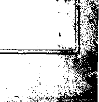

Temporary change in sizeand appearance of this magazine is due to shortage of print paper in New York City. See note below.
Lundberg Brookside SWestfcrd Mass '9-20 3
if
PuMUhecf every other Wednesday «t J? Myrtle Avem?*, Brooklyn, New York Or*. by Woodworth, Hudgint* &. Martin. C. J. Woodworth, Editor; R. J. Martin. Burinm Mgr; TV. F. Hudgings, See'y-Treas.; Copartners and Proprietors. Address: 35 Myrtle Avenue. Brooklyn, N.Y. Price: 10c a copy; $1.50 a year: Canada and foreign, $2.00.
ntered as seeond'cUas matter at Brooklyn, N. Y., postojfict, under the act of March 13?$.
sfc'.
fc
Volume I
New York, Wednesday, September 15, 1920
Number 26
(Part
IN 1856 a South Carolina newspaper made the following statement:
“The great evil of Northern free society is that it is x burdened with a servile class of mechanics and laborers
unfit for self-government, and yet clothed with the Master and slave is
attributes and powers of citizens, a relation as necessary as that of parent and child, and the Northern States will yet have to introduce it. Slavery is the natural and normal condition of the laboring man, whether white or black.”
The cast of mind that formulated the above statement is still in existence, and, today is manifesting itself in a series of laws aimed to prevent strikes. We will have more to say upon this subject in a later issue, but merely note here that the President of the United States is authority for the remark that “the right of individuals to strike is invio-
the liberty of the individual citizen preserved by limitations upon official power, and put an end to the dictatorship which ive created in order to carry on the war. Also, wc should not take away the right to strike. It is labor's great protection.”
Yet the Republican Platform makes low obei-
Why such a tendency now to autocracy?
Read Judge Rutherford’s two great articles in September 29 issue of this journal: “The Distress of Nations—Cause, Remedy”, and “The Beast at War”.
Explanatory Note
The shortage of paper still continues, but beginning October first The Golden Age will resume its usual size and increase the price fifty cents to cover the greatly increased costs. This will make the price after October first $2.00 In the United States and $2.50 in Canada and in foreign territory. Meantime, however, subscriptions and renewals win be accepted, until September thirtieth inclusive, at the present price— $1.50 domestic, and $2.00 Canada and foreign.
sauce to this form of slavery; and the sentiment among those who now have the bit in their teeth is so strong that when, on April 30,1920, the vice-president of the American Federation o f Labor, Matthew Woll, attempted to argue against the Kansas compulsory labor lass7 before the United States Chamber of Commerce, he was hissed off the platform. Is this what is called one hundred percent Americanism!
late and ought not to be interfered with by any process of government”: and in this statement he but echoes a sentiment expressed a generation earlier by Abraham Lincoln.
In a speech delivered February 19, 1920, before the New York Republican Convention, Elihu Root said:
'■'More important than all is the necessity that we ehall restore our Republican form of government, with
said of the actions of some legislators:
“In some communities they have spoken and they have acted as if they had gone mad. Some of the measures they have passed seem utterly beyond reason. I recently heard an able jurist remark: 'The old Czarist government of Russia didn’t have anything on us as we are today. The fathers of the American Revolution must be turning in their graves. Even our judges seem to be losing their heads.’ The results are exactly what
' ■ .
6go The Golden Age for September 15, 1920 .
might be expected. In place of freedom, we have a new kind of tyranny that masquerades and defies criticism because it calls itself patriotism. Our country, once the land of the free, the asylum of the oppressed, is in danger of becoming a land where oppression is systematically encouraged and a place where the oppressed are in peril of deportation to countries where their very lives may be- sacrificed.”
Before the war the Government had, and still 1 has, in full force and effect laws providing fines up to $10,000, and imprisonment up to ten years, for "any person who incites, sets on foot, assists or engages in any rebellion or insurrection against the authority of the United States or the laws thereof, or give aid or comfort thereto”.
This is as far as any European government now in existence has been able to go; yet to this was added in war time the so-called Espionage Act, a counterpart of the old Alien and Sedition Act which completely destroyed the party that advocated it; and there are now in the Senate and the House of Representatives, in a time of imaginary war but of actual peace, seventeen bills pending which have the purpose of penalizing opinions or, in other words, of making espionage in the United States perpetual. Moreover, in the mad rush to suppress thought twenty - seven states have passed measures providing punishment for the peaceful advocacy , of certain economic and political beliefs. How far this country has departed from its moorings may be judged from the fact that at the very time when the representatives of foreign governments were announcing that their governments were prepared to relax passport restrictions upon tourist travel, some of the bureaucrats at Washington were trying to make American passport regulations permanent and to raise the fees for passports from $2 to $10.
Thomas Jefferson, at one time supposed to ■ have been a good Democrat, was the author of the following preamble to the Virginia Toleration Act of 1785. It would be a good thing if some of these wild statesmen of our day who are passing all kinds of foolish laws at the behest of manufacturers’ associations and of chambers of commerce would stop, look and listen to the words of a man who was accustomed to think before he legislated:
“Almighty God has created the mind free. AU attempts to influence it by temporal punishment or burdens, or by civil incapacities, tend only to beget habits of hypocrisy and meanness. To suffer the civil magistrate to introduce his power into the field of opinion, or to restrain the profession or propagation of principles, on supposition of their ill tendency, is a dangerous fallacy, which at once destroys aU liberty; because, he being, of course, judge of that tendency, will make his opinions the rule of judgment, and approve or condemn the sentiments of others only as they shall square with or differ from his own. It is time enough for the rightful purpose of civil government for its officers to interfere when principles break out into overt acts against peace and good order.”
TYTHETHER they were foolish in their choice or not is a matter of opinion,but something like 170,000 people of New York City sent five rep re sentative s to Albany torepre sent the Socialist ticket, and these men were excluded from the Assembly. New York State Senator Thompson stated that this exclusion of the Socialists was effected while certain assemblymen were drunk, with liquor furnished by the lobbyist of the Associated Manufacturers. Even Attorney General Palmer denounced these Albany proceedings; and the religious assembly with which he is affiliated, the Quakers of Pennsylvania, New Jersey, Delaware and Maryland, came out with the following statement:
‘Tn challenging the right of five Socialists to take the seats to which they were duly elected, the legislature of New York has laid violent hands upon the foundations of representative government. ■ Sedition laws for peace time, such as those already passed in some states, and those now pending in Congress, are inroads upon the domain of American freedom, pregnant with injustice and danger. No man can measure the harm that may ensue if we continue these encroachments upon freedom of expression. History is replete with lessons of the folly of suppression. Liberty asks of us a price, the price of tolerance toward those to whom we do not wish to show tolerance.”
Samuel Untermyer, a great lawyer and deep student of public affairs, in a letter to Clayton R. Lusk, Chairman of the famous (?) Lusk Committee of the same legislature, said: .
“Although it is well known that I am a pronounced anti-Socialist because of my conviction that the governmental policies of Socialism are not practicable and workable, and that as a program it is little more than an iridescent dream, I have always realized that the Socialist Party has been of great service and is destined to be of still greater service in curbing and correcting the greed and injustice of the capitalistic system, and that its usefulness as an opposition party has been fully vindicated.”
Charles E, Hughes, ex-Governor of New York State, former Justice of the Supreme Court of the United States, and one time candidate for President on the Republican ticket, gave expression to similar views.
The Philadelphia North American, in its issue of May 7, 1920, calling attention to the Albany matter said:
"Five men duly elected to the assembly from districts in Greater New York were suspended from that body upon ah ex parte statement of vague charges that the platform upon which they- were chosen by the voters was ‘inimical to the best interests of the State of New York and of the United States’. At the subsequent hearing no indictable or disqualifying offense was proved against any of the men; yet they were expelled from the legislature, by a bipartisan vote, upon the explicit ground that they were Socialists, members of a political party whose tenets are rejected and condemned by most Americans. This proscription of a political minority was without precedent in American history, without justification, without sound excuse. In unseating these men the legislature violated the fundamental principle underlying this country’s institutions—which is, the right of parties and constituencies to participate in public affairs through duly elected representatives.”
A somewhat similar action took place in the lower house of Congress. Victor L. Berger, of Wisconsin, was elected to Congress in a campaign in 1916 in which he polled 15,936 votes against 27,217 polled by his opponents. He was denied his seat in Congress and on December 19, 1919, was reelected from the same district by a vote of 24,367 against 19,561. This is a gain of 8,431 votes and shows just the effect of an attempt at forcing the American people. There is no other way in which Mr. Berger could have done as much for the Socialist cause as by being denied his seat. In Europe there are Socialists in every parliament; and in some countries they are in the majority, or hold the balance of power; and yet somehow those countries manage to rock along.
THE greatness of Abraham Lincoln stands out in times like these when so many great seats of public authority are occupied, or partially occupied, by such little men. Lincoln made the statement that “the people are the rightful masters of both congresses and courts, not to overthrow the Constitution, but to overthrow the men who pervert the Constitution”. But there are some who seem to have overlooked this fact and to think of the men temporarily in office as so many “rulers”, rather than as “administrators”, servants of the people.
During the war United States Attorney General Thomas I. Gregory told the people: “Obey the law and keep your mouth shut”. This advice is all right for a time of war, perhaps; but after the armistice it is no excuse for the action of Sheriff Yancey, of Barton County, Kansas, in -prohibiting representatives of the Nonpartisan ' League from making speeches.
On Jan. 14, 1920, the New York World said: , “Most of the activities that are going on in the way of suppressing extreme radicalism are in the nature of lynch law. Officials act first and then try to find the ■ evidence on which to sustain their action. In the meantime they are tearing up the guaranties of the Bill ;, of Kights and destroying the essential elements of free government. Between the fools and the fanatics of the two extremes the American people are confronting a real danger to their liberties which they can no longer. afford to ignore. It is time to get back to the Bill of • Kights. It is time to get back to the Constitution.”
The Chicago Tribune of April 26, 1920, said:
“A citizen makes a remark which we do not like, nr is suspected of having made a remark or being about to make a remark. The department of justice raids -his -’5 ■ office, carries off his papers, and violates his rights in property. The courts later will say that the department ’ of justice had no right to that man’s business documents. V
He can get what satisfaction he can out of that. •'i Socialists are expelled from legislative bodies. We don’t . like Socialists. Therefore they have no right to form ft political party.”
“A man leads a strike. We put him into jail. We . don’t like strikes. We have no law against them, but we do not like them. Therefore we jail a map. who <; starts one, if we can find that he can be reached by a war law intended to prevent interference with the production and transport of war necessities. We indict S coal strikers in a time of actual peace because they are ■■■■. supposed to be injuring a nation at war. We put raff- ’ road strikers into jail because they are supposed, in > actual peace, to be hindering the movement of troops.” ‘
PEOPLE who are sensitive to criticism ought . to keep out of public life. No man ever yet . accomplished anything that was worth accom- ‘
plishing that did not receive criticism. And the passage of alien and sedition laws does not stop criticism. Rather these increase it, and their authors and sponsors are justly esteemed little men who have not the moral courage to face criticism and who are trying to prevent it. After the alien and sedition law of a hundred years ago had been annulled, it was so unpopular that the fines which had been imposed under it were all returned to those wdio had suffered under it.
' The Sandusky Register says:
"Liberal thought is penalized today in the United States. Radicalism is ostracised. The nation is hysterical, and its hysteria is fed by fanatical jingoes t? ' and crafty politicians. The people have not been peri . mitted the boon of calm discussion and serious thought, iThey have not been given time to realize that one may be a ‘radical’ and still be a good American—that there t. are many kinds and degrees of radicalism, and that • constructive, progressive radicalism is the rock upon
; which American democracy was built.”
y Judson King has said:
J “For centuries no man could even lecture upon or
f write a philosophical treatise about government without being in danger of arrest. If he criticised the deeds of > his government, advocated an undesired political or t economic reform, his danger increased. Revolution might be farthest from his thoughts, but that mattered i: not. It was an easy thing for the crown lawyers and
J'’ great judges to read ‘constructive treason’ into his words S , and- conviction followed. Hundreds of thousands of
y men have been sent to the stake, to the scaffold, into
■' exile, or to rot in prison by such construction of law.
h “The legal crux of the iniquity lay in the power given
persecutors and the courts to decide the meaning of words. The abuse of that power, by intimidating f expression, paralyzed thought. It spread terrorism and
t unhappiness to the millions of every nation down the
v ages. It fostered ignorance, prolonged the age of
j tyranny and, by making peaceful development impos-
' sible, provoked frightful revolutions of blood. That is
5 the historic reason why the men who wrote the Cony stitution and the penal code left open the “hiatus’ which
' advocates of permanent sedition legislation now desire
J closed.”
■" Joseph I. France, United States Senator from
■■ Maryland, said:
y, “Radical literature is now being produced by the
ton. The I. W. W. has grown. Revolutionists and V destructive radicals of every variety have become vastly
• more numerous. All this has come about since the.
P Espionage Act was. passed. Now we are told that must
k- be made more drastic. How can it be made more
drastic without taking away all liberty of thought and
speech? Anybody who thought about our history or about human nature could have forecast what has happened. To the degree that we make the law more 3 repressive, to that extent will we create hostility to our government. -
“I still think that when the framers of this republic declared in the first amendment to the Constitution . that ‘Congress shall make no law respecting an establish- i ment of religion, or prohibiting the free exercise thereof, : or abridging the freedom of speech or of the press, or the right of the people peaceably to assemble, and to petition the government for a redress of grievances’, . < they meant precisely what they said. And I still think that they were wise.”
Moreover, there are honest men, honest Americans, who are determined to have their rights in these matters. Robert Buck, editor of the _ ■
New Majority, speaking for some of these at the Civic Club of New York, July 28,1920, said:
“The Farmer-ljabor party now serves notice that it is unalterably in accord with such demands as the Plumb : Plan, nationalization of mines and their control by the ■; workers, an increasing share for labor of the fruits of labor, equal suffrage without regard to race or sex, the freedom of all subject races and the immediate aban- . donment by the United States government of all its imperialistic adventures, and the immediate repeal of the Espionage law and all sedition and criminal syndicalist laws.” . -i.
Those who have been running things had '
better listen to these Avoids; for it is confidently •
estimated that there are seven million voters in the United States who are through for all time Avith both of the Wall Street parties, Republican ‘ and Democratic.
Ralph Waldo Emerson is authority for the statement that “if there be a country where speech is not free; where mail bags are opened and tampered with—that country is not civil but barbarous”. Yet Professor Stanley I. Rypins, of the University of Minnesota, 1 employed during the Avar in connection with the military intelligence bureau, tells that matters .. were at one time in such a state that he was compelled in his Avork to open the mail of evTen the third assistant secretary of state, to prevent his receiAung mail from a conscientious objector. . Does anybody suppose there Avas any real :■ necessity for a thing of this kind? Who decided 'J that this man should not receive this mail?
March 24, 1920, in the United States Senate, Senator France said:
“I demand an end to this taxing of the people to pay swarms of Federal spies, agents and special officers who may become parasites, blackmailers, sappers of political morality and a menace to liberty. There ia but one test of loyalty. Is a man loyal to the Constitution and devoted to the liberty which it guarantees? Apply this test, and I fear that many true patriots languish in Federal prisons, while in the legislative halls there sit men with disloyal and traitorous hearts.”
The Butte Bulletin, in February, 1920, said:
“Measures heretofore found only in countries ruled by the blackest of reactionaries have become the accepted policies of this government during the Wilson administration, the star chamber and the torture-cell of the inquisition have reappeared in America,, the torch of the Statue of Liberty is obscured by the smoke of departing vessels bearing the first deportees from free America, the jails are filled with men and women convicted of holding opinions represented by powerful groups in European parliaments; papers that defend them are denied the mails if not actually suppressed; thousands of secret police infest the land, the agents provocateurs are busy conspiring against the liberties of citizen and alien alike.”
In a statement given out on January 6, 1920, at Washington, by Santeri Nuorteva, secretary of the Russian Soviet Government Bureau, he said:
“We have conclusive evidence that agents of the Department of Justice have actively participated in the organization of the Communist party of America, and that those very planks in the platform of the party which now form the basis of the persecution of thousands of people, have been drafted and inserted into that program by such government agents. We also are prepared to show before the Senate Committee that some other radical activities, the instigation of which has been charged to Russians, in reality were inspired by secret service agents. We can prove that the chief figures in certain celebrated bomb-plots were agents of a similar nature. In other words, some officials have been establishing that sinister institution which is known in Europe as the system of ‘agent provocateur’
acob Gould Schubman, retired president of Cornell University, in an address before the annual convention of Northern Baptists, held at Buffalo, June 28, 1920, made the statement that the freedom said to have been gained in America during the last three years had been far outweighed by the freedom'lost, and that President "Wilson will be held largely responsible for the repressive measures used during the war.
About five years ago the President sent to Haiti three thousand marines; and it is alleged that these were sent without taking into counsel either the American people or their representatives. Herbert J. Seligmann, writing in the Nation, says of these American military forces now in charge of Haiti:
“Haitian men, women and children, to a number estimated at 3,000, innocent for the most part of any offense, have been shot down by American machine gun and rifle bullets; black men and women have been put to torture to make them give information; theft, arson and murder have been committed almost with impunity upon the persons and property of Haitians by white men wearing the uniforms of the United States. Black men have been driven to retreat to the hills from actual slavery imposed upon them by white Americans.”
Press and speech in Haiti are absolutely shackled, and in three years the Associated Press correspondent at Cape Haitien has not been allowed to send to the United States a single line regarding the almost daily military operations. Readers of The Golden Age, however, will please observe that “business” is much better. Fifty-eight thousand acres of the best lands have passed into the hands of American capitalists; and most of the banks, railways, sugar mills and lighting plants are now in the hands of Americans.
Charles E. Hughes, speaking at Cambridge, Massachusetts, June 21, 1920, at the centenary of the Harvard Law School, had the following to say regarding modern tendencies toward tyranny:
“There has been a disposition to revert to the methods of tyranny in order to meet the problems of democracy. Intent on some immediate exigency, and with slight consideration of larger issues, we create autocratic power by giving administrative officials, who can threaten indictment, the opportunities of criminal statutes without any appropriate definition of crime. We went to war for liberty and democracy, with the result that we fed the autocratic appetite.”
“We may well wonder in view of the precedents now established whether constitutional government as heretofore maintained in this Republic, could survive another great war even victoriously waged. Perhaps to an extent unparalleled in our history, the essentials of
t •
Jr
liberty are being disregarded. Very recently informa-t&tfi has been laid by responsible citizens at the bar of public opinion of violations of personal rights which savor of the worst practices of tyranny.”
The New York American, April 25,1920, said:
“Nowhere in this land have the inherent, fundamental and essential liberties of speech, of writing, of assembly and of collective petition and protest been respected by the bureaucrats created by the war or by the spy service produced in the same environment or by the legislators chosen to voice the free will of the people or by the judges whose sworn duty it is to protect the rights and
• libertieB of every citizen and to maintain unimpaired the guarantees and the supremacy of the Constitution.” ‘fNo state, no city of importance, has been spared these exhibitions of bureaucratic indolence, of judicial Unfaithfulness, of legislative disloyalty to the principles of free representative government, of subservient silence 1 or mean applause on the part of the press, whose peculiar ' duty it is, and whose glory it ought to be, to speak out manfully and boldly in defense of the rights of citizens and the liberties of the land. Now, then, it is the lesson of all human experience that tyranny breeds revolt, that repression of natural rights breeds hatred even of lawful , government, and that the surest way to make life and property unsafe is to make liberty unsafe.”
s,
S'
I
B •.
1“)epresentattv’e Huddleston, of Alabama, . J-V introduced in Congress March 4, 1920, a bill providing ten years in prison or $10,000 fine, or both, for any attorney general or other official, agent or employe of the United States, who may deprive a person of his constitutional rights. He was led to introduce this bill by the . large number of illegal arrests that have been made.
Some of these arrests occurred in the vicinity of Boston. John Domason, a Dalmatian by birth, was thrown into jail and forgotten, was . allowed to remain there three years without any trial or indictment, so it was alleged; and Peter Frank, a native-born American, who had never been outside of the United States, was jailed without warrant and refused permission to see a lawyer; and when his lawyer attempted to secure a copy of the warrant he also was arrested and ejected from the presence of the official responsible for the arrest. Federal Judge Anderson, of Boston, released Frank on a Writ of habeas corpus with the statement, “The immigration officials have no more right to hold a citizen of the United States in connection with the round-up than I would have to order him hanged”.
The same Judge Anderson, greatly admired by liberty-loving Americans, and greatly hated by liberty-hating bureaucrats, also said: “It is perfectly evident to my mind that the government owns and operates at least a part of the Communist party”. A little later, when he learned that a man was arrested on January 2, 1920, and a telegraphic order for his arrest was sent from Washington thirteen days afterwards, he gravely commented:
“I wish you would show me one case in which the Department of Justice has the authority to arrest persons and hold them two weeks without warrants. A more lawless proceeding is hard to conceive. Talk about Americanization; what we need is Americanization of those who carry on such proceedings. I can hardly sit on the bench as an American citizen and restrain my indignation. I view with horror such proceedings as this.”
There are also other brave judges on the bench; and Judges W. H. S. Thompson and Charles P. Orr, of the Western District of Pennsylvania, have recently condemned in equally strong language the anarchists who in the name of justice arrested and imprisoned without warrant and without hearing men accused of membership in the Communist Party. Judge Thompson said: “I did not suppose this kind of thing could happen in a country where we have a Constitution”.
NEITHER the Czarism of Nicholas nor the dictatorship of Communism,seems as desirable to the people of the United States' as they do to those of Russia. But why advertise the theories of Communism or try to make them popular by persecuting those who hold them! All are familiar with the arguments that there were two million of these Communists in the United States and that they were liable forcibly to take away the liberty bonds of their twenty million holders, although the details as to how this was to be done by the actual handful of Communists, some of them, according to Judge Anderson, government owned, was never fttLly explained.
.................................. . --------------- -----------------.... ------------------------------------ i-.iin I liWMife
Presumably this was the reason for deporting some of the leaders of radical ideas; but it was truthfully said in the United States Senate that though radicals can be deported radical ideas cannot be deported, and whatever of truth such ideas may contain they will thrive better under imprisonment and deportation than they will if allowed free expression. If it is true, as alleged, that the Statue of Liberty contains a lockup for deportees,'it is a strange commentary on present conditions in the United States, always heretofore regarded as an asylum for the oppressed of all countries.
The raids upon the Russians who were to be questioned with a view to deportation were not accompanied with the politeness that should mark the conduct of a great people toward the representatives of another great people. Collier's tells of a raid upon the Russian People's House in New York. The inmates were stood up against the wall and searched. One elderly professor of mathematics was ordered to take off his glasses; and when he did so he was struck upon the forehead with the butt of a revolver and his skull cracked. Then the inmates, men and women, were ordered downstairs, and on the way ran the gauntlet of a line of policemen who pounded them over the head with clubs.
A notary public who witnessed the street scenes attendant upon this raid writes of it as follows:
“Every one was bleeding from wounds on the head; most of them were bandaged with a handkerchief or a piece of shirt; nearly every one was hurt on the knee on the way out, so that they could not run away, I imagine. The fact was that they did not walk down, but crawled. Many fell and rolled down the steps, and were trampled on by those who were shoved after them.”
When Francis Fisher Kane resigned as United States Attorney for the Eastern District of Pennsylvania he gave his reasons in the Philadelphia Evening Bulletin, of January 23, 1920, in the following language:
“I see no justice, for instance, in the blockade of Soviet Russia. I may be wrong, or I may be right in my views, but I think that we should feel a certain sympathy with the poor Russians in this country who are now excited over the news which they are getting of the troubled conditions in their native land. Such people ought to be treated with kindness and not sent back to the famine-stricken districts in Europe, unless we are
absolutely compelled to do so. In my view our national safety does not require such action.” .
‘•'Among the cases that have come to my notice of persons caught in the recent raids in Philadelphia is that of a Russian Jew barber, whose wife is an Ametican-born Methodist. They have six children, all under eleven years of age, the youngest being only six months old. When the man was arrested there was absolutely . no money in the house. His employer speaks highly of \ his character and industry. Though he may very likely be deported I cannot regard him as a menace to society just because he was a member of the Communist party. I think it not only foolish, but an outrage to take him from his wife and children and leave them dependent upon charity. I have no doubt but that there are hundreds of such eases.”
Mr. Kane intimated in his resignation that he thought the Department of Justice could find plenty to keep it busy in prosecuting the violators of the prohibition act and those munition manufacturers and other persons, made rich by the war, who are “seeking to dodge the payment of their taxes and otherwise unloading the war burdens put upon them”. He did not suggest that probably these same persons were the very ones raising all the hue and cry against the Russians to divert attention from themselves; but there are others who think that is just what has happened. The American people can hardly stagger along under the load of excessive profits the profiteers have heaped upon them. ■ The profiteers know it; and if they can divert the public’s attention by shouting “Russian” or “Bolshevik” loudly enough, they hope to escape awkward and humiliating attention upon thexa-selves.
General Smuts sized the Russian situation Up in a few words when he said:
“Leave Russia alone. Remove the blockade. It may well be that the only ultimate hope for Russia la a sobered, purified Soviet system, and that may be far better than the Czarisms to which our present polisiea seem inevitably tending.”
Henby W. Youmans in the Boy croft said of recent conditions in the United States:
“Loyal farmers’ meetings have been broken up by mobs, their speakers arrested and imprisoned. Tar and feather p° md deportations were common in several states because the farmers of the Nonpartisan League were disloyal to the old party bosses. Strikers have been accused of disloyalty and pro-(rerm an ism and jailed because they demanded a decent living wage. Any one not blinded by hate, prejudice or stupidity knows that the men and women accused of treason and given the longest prison terms are the very ones most famed for their extreme hostility to Kaiserism and all that it stands for the world over; that they are the most faithful defenders of all human rights that our flag stands for.”
George Bernard Shaw says he does not care to come to America because he is not sure that he would be given rooms next to the people he most admires in America, though he is perfectly sure he would be clapped into jail. He says: “I don’t understand how the stupidest neighbor of a man like Eugene Debs can fail to realize the greatness of his heart,” and adds:
“It would be cruel to assume that Americans know their institutions and yet tolerate a regime which claps into prison and deports men and women who go into the unprofitable business of emancipating their fellow-men, and sends to Congress and rewards with colossal fortunes those who make a good thing of ammunitions and compromised meat."
THE National Civil Liberties Bureau issued a statement January 22, 1920, that at Alcatraz Island, San Francisco, Colonel R. I). Johnson, the commanding officer, has introduced four dark cages six feet high, twenty-three inches in length and one foot broad, in one of which Robert Simmons, serving a ten-year sentence as a conscientious objector, was confined at the time the statement was made. In this iron strait-jacket, like the Chinese torture box, the poor prisoner is unable to sit down, lie down or fully stand.
In Chicago, September 28,1919, the American Freedom Convention passed resolutions declaring, among other things;
“Democracy no longer exists in the United States. One by one the rights of a free people have been stripped from us until our government is a republic in name only, ... As a result of these unconstitutional and un-American laws and practices, hundreds of citizens are in the Federal and state prisons of the United States, charged with offenses that our forefathers never dreamed would be considered offenses in this country.”
“For these political, industrial, religious and military offenses they have had inflicted upon them prison terms as long as fifty years. Not only is this true, but while in our prisons these prisoners have hp<*n go inhumanly treated that many have died and others have lost their reason.”
“Not one of them is a person of great wealth or power. All are workers or those who have cast their lot with the struggle of the workers. If this situation is permitted to continue in the United States no one will be safe except the exploiters of industry. So long as Tom Mooney is in prison no labor union organizer will be secure in exercising the right peacefully to induce workers to join unions.”
THE British people claim that never, in seven hundred years, have they as a people had as little liberty as the American people have today; and the New York American reports Arthur Gleason as having said of the situation there:
“The soldier is absolutely insisting on freedom of speech, freedom of assembly and the recognition of trades unionism. He will not permit a socialist or labor meeting to be broken up. If attempts were made to deport people or to repress them, there would be an uprising in England. If forms of repression were used, there would be a revolt. But the Government is not enough of a fool to use jail sentences, deportations, or any of that cheap stuff. In other words, the British Government does not use violence in England and it does not, therefore, create it.”
Another English writer, however, B. N. Langdon-Davies, writing in The World Tomorrow in October, 1919, gave a less hopeful view of the present condition of the ancient liberties of England winch the British people have, hitherto, so much appreciated and enjoyed:
“Today there is left neither the right to nor the desire for apy of these liberties. We have conscription, a censorship, powers of search without warrant and imprisonment without trial. Parliament has lost control over the Executive, the heads of which parry questions instead of answering them and frequently refuse information altogether-. The Government is able to choose the moment it desires for a General Election, whether it be at the end of one year, or at the end of eight, despite the fact that by law the life of a parliament is limited to five years. It can disregard the wishes of the electorate, break its most solemn pledges and secretly embark the nation on disastrous enterprises with complete impunity. Police spies and agents provocateurs are multiplied, sections of the press are ‘doped’, and by the suppression of the truth and suggestions of the false the public mind is so molded and manipulated in advance as to be ready and eager to accept what its rulers have already done on its behalf."
is®
F'* V
rprIE everlastingness of the punishment having been established, only one point is left open for discussion; namely, the nature of the punishment. Take your Concordance and search out what saith the great Judge regarding the punishment of willful sinners who despise and reject all His blessed provisions for them through Christ. What do you find? Does God there say: ‘AU sinners shall live in torture forever2? No; we find not a single text where life in any condition is promised to that class.
God’s declarations assure us that ultimately He will have a clean universe, free from the blight of sin and sinners—because “all the wicked will He destroy”.—Psalm 145: 20.
But while we do not find one verse of the Bible saying that this class can have life in torment, or in any other condition, we do find numerous passages teaching the reverse. Of these we give a few merely as samples. “The wages of sin is death.” (Romans 6:23) “The soul that sinneth, it shall die.” (Ezekiel 18:4, 20) “The wicked shall perish.” (Psalm 37: 20) “'Yet a little while and the wicked shall not be.” (Psalm 37:10) Thus God has told us plainly the nature of the everlasting punishment of the wicked— that it will be death, destruction.
The false ideas of God’s plan of dealing with the incorrigible, taught ever since the great “falling away”, which culminated in ecclesiasti-cism, and instilled into our minds from childhood, are alone responsible for the view generally held, that the everlasting punishment provided for willful sinners is a life of torment. This view is held, notwithstanding the many clear statements of God’s Word that their punishment is to be death. Here Paul states very explicitly what the punishment is to be. Speaking of the same Millennial day, and of the same class, who, despite all the favorable opportunities and the fulness of knowledge then, will not come into harmony with Christ, and hence will “know not God” in the true sense and “obey not”, he says—‘Who shall be punished”. Ah, yes 1 but how punished ? He tells us how: They “shall be punished with everlasting destruction [a destruction from which there shall be no recovery, no redemption or resurrection— Hebrews 10:26-29] from the presence of the Lord and from the glory of His power”. (2 Thessalonians 1: 9) This destruction is represented in the parable as the everlasting “fire” prepared for the devil and his angels. It is “the lake of fire and brimstone’2, the second death (Revelation 20:14), into which the “goat” class of this parable are sent.—Matthew 25: 41.
Thus the meaning and reasonableness of this statement concerning everlasting punishment are readily seen.
Now consider carefully Matthew 25:46, and note the antithesis, the contrast, shown between the reward of the “sheep” and the reward of the “goats”, which the correct idea of the punishment (Greek — kolasin — to cut off) gives—• the one class goes into everlasting life, while the other is everlastingly cut off from life— forever restrained in death. And this exactly agrees with what the Scriptures everywhere else declare concerning the wages or penalty of willful sin.
Consider for a moment the words of verse 41: “Depart from me, ye cursed [once redeemed by Christ from the Adamic curse or condemnation to death, but now condemned or cursed, as worthy of the second death, by the One who redeemed them from the first curse], into everlasting fire [symbol of everlasting destruction], prepared for the devil and his messengers [servants].”
Remember that this is the final sentence at the close of the final trial—at the close of the Millennium; and that none will then be servants of Satan ignorantly or unwillingly, as so many now are; for the great Deliverer, Christ, will remove outside temptations, and provide assistance. toward self-improvement, which will enable all who will to overcome inherent weaknesses and to attain perfection. These “goats”, who love evil and serve Satan, are the messengers (“angels”) of Satan. For these and Satan, and for no others, God has prepared second death— the everlasting destruction. Fire will come from God out of heaven and consume them. Consuming fire and devouring fire all can appreciate, unless their eyes are holden by false doctrine and prejudice. No one ever knew of a preserving fire; and as fire never preserves, but always consumes, God uses it as a symbol of utter destruction.—Revelation 20: 9.
—Rev. 19:20; SO: 10, Uh15;21:S—
“The lake of fire and brimstone” is several times mentioned in the book of Revelation, which all Christians admit to be a book of symbols. However, they generally think and speak of this particular symbol as a literal statement giving strong support to the torment doctrine, notwithstanding the fact that the symbol is clearly defined as meaning the second death: “And i death and hell were cast into the lake of fire.
> This is the second death,” etc. (Rev. 20:14) It
p is sometimes spoken of as “a lake of fire burning ■with brimstone”(Revelation 19: 20), the element ?/, brimstone being mentioned to intensify the i symbol of destruction, the second death: burn-
; ing brimstone being one of the most deadly
elements known. It is destructive to all forms ■ of life.
s ’ The symbolism of this lake of fire is further shown by the fact that the symbolic “beast” and the symbolic “false prophet”, and death and hell [Hades], as well as the devil and his followers, are destroyed in it.—Revelation 19:20; 20:10, 14,15; 21:8.
f ’ This destruction or death is called the second death in contradistinction to the first or Adamic death,, and not to signify that everything which ■ goes into it dies a second time. For instance, death (the first or Adamic death), and Hades, the grave, are to be cast into it—this work will require the entire Millennium to accomplish it;
: , and in no sense will they ever have been destroyed before. So also “the devil”, “the beast,” and “the false prophet”, will never have been destroyed before.
1 From the first, or Adamic death, a resurrection has been provided. All that are in their graves shall therefore come forth. The Reve-lator prophetically declares: “The sea gave up the dead which were in it, and death and hell
‘ ' [Hades, the grave] gave up the dead which were
in them. . . . And I saw the dead, small and great, stand before God, and the books were opened.” (Revelation 20:13,12) It was in view of God’s plan for redeeming the race from , Adamic death that in both the Old and New Testaments it is called a “sleep”. In Israel’s ; history of the good and the wicked it is repeatedly stated that they “slept with their fathers”.
The apostles used the same symbol and our Lord also. But no such symbol is used in reference to the second death. On the contrary, the strongest figures of total and utter destruction are used to symbolize it; viz., “fire and brimstone” ; for that death will be a destruction from which there will be no recovery. • • '
Blessed thought! The Adamic death (which claimed the whole race for the sin of their . progenitor) shall be forever swallowed up, and shall cease in this second death into which it is > to be cast by the great Redeemer who bought the whole world with the sacrifice of Himself. Thus God tells us through the Prophet: “I will ransom 5 them from the power of the grave [Sheol]. I will redeem them from death. ... O grave [Sheol] I will be thy destruction.” (Hosea 13:14) The first or Adamic death shall no longer have liberty or power over men, as it has had for the past six thousand years; no longer S shall any die for Adam’s sin. (Romans 5:12; Jeremiah 31: 29, 20; Ezekiel 18: 2) Thenceforth the New Covenant, sealed with the precious blood, shall be in force, and only willful transgressions will be counted as sin and punished with the wages of sin—death—the second death.
Thus will the Adamic death be cast into and swallowed up by the second death.
And Hades and Sheol—the dark, secret con- • dition, the grave, which in the present time speaks to us of a hope of future life by God’s resurrection power in Christ—shall be no more; for the second death will devour no being fit for 1 life—none for whom there remains a shadow of hope, but such only as, by the unerring Judge, have been fully, impartially and individually found worthy of destruction. And Satan, that lying tempter who deceived and ruined the race and who, with persistent energy and cunning, ? has sought continually to thwart the purpose of ' j God for our salvation through Christ, and with •
him all who are of his spirit, “his angels,” shall :
be destroyed, and shall never awake from death to trouble the world again. Here he is said to be cast into “the lake of fire”—the second death; >
and Paul in Hebrews 2:14, referring to the same thing, calls it destruction—“that he might * destroy death, and him that hath the power of < death, that is the devil”. .


Thus the second destruction (or death) begins quite early in the new judgment: it begins with the false systems symbolized by the beast, false prophet, etc., but it will not reach the world of mankind, as individuals, until they have first had full trial, with full opportunity to choose life and live forever. Chapters 20:12, 13, and 21:3-7, indicate the blessed, favorable trial in which all, both dead and living (except the church, who, with Jesus Christ, are kings, priests, joint-heirs and judges), will be brought to a full knowledge of the truth, relieved from sorrow and pain, and freed from every blinding error and prejudice, and tried “according to their works”.
The grand outcome of that trial will be a clean universe. As the Revelator expresses it, “Every creature which is in heaven and on the earth . . . heard I saying, Blessing and honor and glory and power be unto Him that sitteth upon the throne, and unto the Lamb forever”. But this result will be accomplished in harmony with all God’s dealings past and present, which have always recognized man’s freedom, of will to choose good or evil, life or death.
We cannot doubt then that in the close of the Millennial age, God will again for a “little season” permit evil to triumph, in order thereby to test His creatures (who will by that time have become thoroughly acquainted with both good and evil, and the consequence of each, and will have had His justice and His love fully demonstrated to them), that those who finally prefer and choose evil may be cut off—destroyed. Thus God will for all eternity remove all who do not love righteousness and hate iniquity.
We read, regarding that testing, that Satan will endeavor to lead astray all mankind, whose numbers will then be as the sand of the sea for multitude; but that many of them will follow Satan’s evil example and choose evil and disobedience, with past experience before them, and unhampered by present weaknesses and blinding influences, we need not suppose. However, when God does not tell us either the number or the proportion of those to be found worthy of life, and those to be judged worthy of death (the second death), we may not dogmatize. Of one thing we may be confident, God willeth not the death of the wicked, but would that all should turn to Him and live; and no one will be
destroyed in that “lake of fire and brimstone’* (figurative of utter destruction—Gehenna) who f; is worthy of life, whose living longer would be a blessing to himself or to others in harmony with righteousness. ■
Utter and hopeless destruction is intended -only for willful evil doers, who, like Satan, in pride of heart and rebellion against God, will. ■ love and do evil notwithstanding the manifests-tions of God’s disapproval, and notwithstanding ■ ? their experience with its penalties. Seemingly the goodness and love of God in the provision of " a ransom, a restitution, and another opportunity of life for man, instead of leading all to an -abhorrence of sin, will lead some to suppose that God is too loving to cut them off in the second death; or that if He did so He would ■ give them other, and yet other future opportu- U nities. Building thus upon a,supposed weakness y
in the divine character, these may be led to try to take advantage of the grace (favor) of God, < as a license for willful sin. But they shall go no further; for their folly shall be made manifest. Their utter destruction ■will prove to the ,. righteous the harmony and perfect balance of ' justice, wisdom, love and power in the divine -v Ruler.
Revelation 31: S ■
The true character of the goat class is \ portrayed. The fearful and unbelieving [who i will not trust God], the abominable, murderers [brother - haters], whoremongers, sorcerers, idolaters [such as misappropriate and misuse divine favors, who give to self or any other creature or thing that service and honor which belong to God], and all “liars”—“whosoever loveth and maketh a lie” [in a word, all who do not love the truth and seek it, and at any cost defend and hold it] “shall have their part in the lake which burnetii with fire and brimstone , [Gehenna, symbol of utter destruction], which is the second death”. Such company would be repulsive to any honest, upright being. It is . hard to tolerate them now, when we can sympathize with them, knowing that such dispositions are now in great measure the result of inherited weakness of the flesh. We are moved to a measure of sympathy by the remembrance that in our own cases, often, when we would do good evil is present with us. But in the close of the
Millennial judgment, when the Lord, the righteous Judge, shall have given every advantage and opportunity of knowledge and ability, this class will be an abhorrence and detestation to all who are in harmony with the King of glory. And the righteous will be glad when, the trial being ended, the gift of life of which these shall have proved themselves unworthy, shall be taken from them, and when the corrupters of the earth, and all their work and influence, shall be destroyed.
The Devil, the Beast and the False Prophet i Tormented
Revelation 20: 9 tells of the destruction of those individuals who join with Satan in the last rebellion; and verse 15 tells of that same destruction in other words, using the symbol ‘‘lake of fire”. They are devoured or consumed in fire. This being the case, the torment of verse 10 cannot refer to these human beings who are consumed, destroyed. Hence the question narrows down to this: Will Satan and a false prophet and a beast be tortured forever, and does this verse so teach?
We answer in God's own words: “All the wicked will he destroy”. Concerning Satan, the arch enemy of God and man, God expressly advises us that he will be destroyed, and not preserved in any sense or condition.—Heb. 2:14.
The beast and false prophet systems, which during the gospel age have deceived and led astray, will be cast into a great, consuming trouble in the’ close of this gospel age. The torment of those systems will be aionion, i e., lasting. It will continue as long as they last, until they are utterly consumed. So also the system of error, which will suddenly manifest itself at the end of the Millennial age and lead the “goats” to destruction, will be consumed. (Revelation 20:7-10) That deceiving system (not specified as to kind, but merely called Satan, after its instigator) will be cast into the same sort of trouble and destruction, in the end of the Millennial age, as the beast and false prophet systems are now being cast into it, in the end of the gospel age.
Revelation 19:3, speaking of one of these systems, says: “Her smoke rose up forever and ever”. That is to say, the remembrance (“smoke”) of the destruction of these systems of deception and error will be lasting, the lesson will never be forgotten—as smoke, which continues to ascend after a destructive fire, is testimony that the lire has done its work. See also Isaiah 34:8-10.
Of Revelation 14:9-11 wTe remark, incidentally, that all will at once concede that if a literal worshiping of a beast and image were meant in verse 9, then few, if any, in civilized lands are liable to the penalty of verse 11; and if the beast and his image and worship and wine and-cup are symbols, so also are the torments and smoke and fire and brimstone.
The casting of death and the grave into utter destruction, the second death, during the Millennial age. is a part of the utter destruction which will include every improper, injurious and useless thing. (Isaiah 11:9; Psalm 101:5-8) The second death, the sentence of that individual trial, will be final: it will never be destroyed. And let all the lovers of righteousness say, Amen; for to destroy the second death, to remove the sentence of that just and impartial trial, would be to let loose again not only Satan, but all who love and practice wrong and deception, and who dishonor the Lord with their evil institutions—to oppose, offend and endeavor to overthrow those who love and desire to serve Him and enjoy His favor. We rejoice that there is no danger of this, but that divine justice unites with divine wisdom, love and power, to bring in everlasting righteousness on a permanent basis.
Turned Into Hell
“The wicked shall be turned into hell, and the nations that forget God.”—Psalm 9:17.
This statement of the Lord recorded by the Psalmist we find without any qualification whatever, and we must accept it as a positive fact. If the claims of “Orthodoxy” respecting hell were true, this would be, indeed, a fearful message.
But let us substitute the true meaning of the word sheol, and our text will read: “The wicked shall be turned into the condition of death, and all the nations that forget God”. This we believe: but next, who are the wicked? In one sense all men are wicked, in that all are violators of God's law; but in the fullest sense the wicked are those who, with full knowledge of the exceeding sinfulness of sin, and the remedy provided
f’-gfc.
w-
for their recovery from its baneful effects, wilfully persist in sin.
As yet few—only consecrated believers—have come to a true knowledge of God. The world knows Him not, and the nations cannot forget God until they are first brought to a knowledge of Him. The consecrated have been enlightened, led of the spirit through faith to understand the deep and hidden things of God. which reveal the glory of God's character, but which, though expressed in His W ord, appear only as foolishness to the world.
As we have hitherto seen, this will not be so in the age to come, for then “1110 earth shall be full of the knowledge of the Lord as the waters cover the sea”. (Isaiah 11:9) Much that we now receive by faith will then be demonstrated to the world. W hen He who has ransomed man from the power of the grave (Hosea 13:14) begins to gather His purchased possessions back from the prison-house of death (Isaiah 61 :1), when the sleepers are awakened under the genial rays of the Sun of Righteousness, they will not be slow to realize the truth of the hitherto seemingly idle talc, that “Jesus Christ, by the grace of God, tasted death for every man”.
We have also seen that the gradual ascent of the Kings highway of holiness in that age will be possible to all, and comparatively easy, because all the stones—stumbling-blocks, errors, etc.—will have been gathered out, and straight paths made for their feet. It is in that age that this text applies. Those who ignore the favoring circumstances of that age, and will not be obedient to the righteous Judge or Ruler— Christ—will truly be the wicked. And every loyal subject of the kingdom of God will approve the righteous judgment which turns such an one again into Sheol—the condition of death. Such an one would be unworthy of life: and, were he permitted to live, his life would be a curse to himself and to the rest of mankind, and a blemish on the work of G'od.
This will be the second death, from which there will be no resurrection. Having been ransomed from the grave (Sheol) by the sacrifice of Christ, if they die again on account of their own sin, “there remaineth no more sacrifice for sin”. (Hebrews 10: 26) “Christ dieth no more; death hath no more dominion over him.” (Romans 6: 9) The second death should be dreaded and shunned by all, since it is to be the end of exists encc to all those deemed unworthy of life. But in it there can be no suffering. Like Adatnic death, it is the extinction of life.
Eg-
It is because through sin mankind had become subject to death (Sheol, Hades) that Christ Jesus came to deliver us and save us from death. "(1 John 3:8; Hebrews 2:14) Death is a cessation of existence, the absence of life. There is no difference between the conditions in the Adamic and second deaths, but there is hope of release from the first, while from the second there' will be no release, no return to life. The first death sentence passed upon all on account of Adam’s sin, while the second death can be incurred only by willful, individual sin.
That the application of our text belongs to the coming age is evident, for both saints and sinners go into Sheol or Hades now. This Scripture indicates that, in the time when it applies, only the wicked shall go there. And the nations that forget God must be nations that have known Him: else they could not forget Him. Never yet have the nations been brought to that knowledge, nor will they be until the coming time, when the knowledge of the Lord shall fill the whole earth, and none shall need to say unto his neighbor, Know thou the Lord, for all shall know Him, from the least to the greatest of them.—Isaiah 11:9; Jeremiah 31:34.
The Hebrew word got, rendered “nations” in this verse, is elsewhere used by the same writer and rendered “heatlie 1”,“Gentiles” and “people”. 'The thought seems to be—any who do not become God’s covenant people, even though they be not openly wicked. The nations (Gentiles, all who under that full knowledge do not become Israelites indeed) who are forgetful or negligent of God's favors enjoyed, and of their duties and obligations to Him, shall share the fate of the willfully “wicked”, and be cast into the second, death.
Tn further proof of this, we find that the Hebrew word shuv, which in our text is translated "turned", signifies turned back, as to a previous place or condition. Those referred to in this text either have been in Sheol or are liable to enter it. but being redeemed by the precious blood of Christ, will be brought out of Sheol. If then they are wicked, they, and all who forget God, shall be turned back, or returned, to Sheol
■I
st
■$
"VTOTING that we teach that the doctrine of everlasting torment was engrafted upon the doctrines of the Christian church during the period of the apostasy, the great falling away which culminated in Papacy, some have inquired whether it does not seem, according to the works of Josephus, that this doctrine was firmly held by the Jews; and, if so, they ask, does it not 'Seem evident that the early Christians, being largely converts from Judaism, brought this doctrine with them, in the very outstart of Christianity?
We answer, No; the doctrine of everlasting torment sprang naturally from the doctrine of human immortality, which as a philosophic question was first promulgated in anything like the present form by the Platonic school of Grecian philosophy. These first affirmed that each man contained a fragment of deity, and that this would prevent him from ever dying. This foundation laid, it was as easy to describe a place for evil-doers as for well-doers. But to the credit of those heathen philosophers be it recorded that they failed to develop, or at least to manifest, that depth of degradation from benevolence and reason and pity, necessary to paint by word and pen and brush such details of horrors and agonies as w’ere soon incorporated into their doctrine, and a belief thereof declared “necessary to salvation” in the professed church of Christ.
To appreciate the case, it is necessary to remember that, when the Christian church was established, Greece stood at the head of intelligence and civilization. Alexander the Great had conquered the world, and had spread respect for Greece everywhere; and though, from a military point of view, Rome had taken her place, it was otherwise in literature. For centuries, Grecian philosophers and philosophies led the intellectual world, and impregnated and affected everything. It became customary for philosophers and teachers of other theories to claim that their systems and theories were nearly the same as those of the Grecians, and to endeavor to remove differences between their old theories and the popular Grecian views. And some sought to make capital by claiming that their system embraced all the good points of Platonism with others which Plato did not see. ' ,
Of this class Avere the teachers in the Christian church in the second, third and fourth centuries. Conceding the popularly accepted correctness of the philosophers, they claimed that the same good features of philosophy were found in Christ’s teachings, and that He was one of the greatest philosophers, etc. Thus a blending of . Platonism and Christianity took place. This became the more pronounced as kings and emperors began to scrutinize religious teachings, and to favor those most likely to awe the people and make them law-abiding. While heathen teachers were truckling to such imperial scrutiny, and teaching an everlasting' punishment for those who violated the laws of the emperors (who ruled as divinely appointed), we cannot suppose otherwise than that the ambitious characters in the church at that time, who were seeking to displace heathenism and to become the dominant religious power instead, would -make prominent such doctrines as would in the , eyes of the emperors seem to have an equal hold upon the fears and prejudices of the people.-And what could be more to the purpose than the doctrine of endless torment of the refractory?
The same motives evidently operated with Josephus when writing concerning the belief of the Jews. His works should be read as apologies for Judaism, and as efforts to exalt that nation in the eyes of Rome and the world. It shouldbe remembered that the Jews had the reputation of being a very rebellious people, very unwilling to be ruled even by the Caesars. They were hoping, in harmony with God’s promises, to become the chief nation. Many rebellious outbreaks hid . occurred among them, and their peculiar . religion, different from all others, came in for \ its share of blame for favoring too much the spirit of liberty.
Josephus had an object in writing his two principal works, "Antiquities,” and "Wars of the Jews”. He wrote them in the Greek language x while living at Rome, where he was the friend and guest successively of the Roman emperors Vespasian, Titus and Domitian, and where he was in constant contact with the Grecian phil- ;
osophies. These books were written for the purpose of showing off the Jewish people, their courage, laws, ethics, etc., to the best advantage before the Grecian philosophers and Roman dignitaries. This object is covertly admitted in his preface to his “Antiquities”, in which he says:
“I have undertaken the present work as thinking it will appear to all the Greeks worthy of their study. . . Those that read my book may wonder that my discourse of laws and historical facts contains so much of philosophy.. . . However, those that have a mind to know the reasons of everything may find here a very curious philosophical theory.”
In a word, as a shrewd man who himself had become imbued with the spirit of the Grecian philosophies then prevailing, Josephus drew from the Law and the Prophets, and from the traditions of the elders and the theories of the various sects of the Jews, all he could find that in the most remote degree would tend to show:—
First, that the Jewish religion was not far behind popular Grecian philosophy; but that somewhat analogous theories had been drawn from Moses’ Law, and held by some Jews, long before the Grecian philosophers broached them.
Secondly, that it was not their religious ideas which made the Jews as a people hard to control or “rebellious”, as all liberty-lovers were esteemed by the Ceesars. Hence he attempts to prove, at a time when virtue was esteemed to consist mainly in submission, that Moses’ Law “taught first of all that God is the Father and Lord of all things, and bestows a happy life upon those that follow Him, but plunges such as do not walk in the paths of virtue into inevitable miseries”. And it is in support of this idea, and for such purposes, evidently, that Josephus, after saying, “There are three philosophical sects among the Jews; first, the Pharisees; second, the Sadducees, and third, the Essenes,” proceeds to give an account of their three theories; especially detailing any features which resembled Grecian philosophy. And because the last and least, the Essenes, most resembled the doctrines of the Stoics and leading Grecian theories, Josephus devotes nearly ten times as much space to their views as to the views of both Sadducees and Pharisees combined.
Josephus directed special attention to th# Essenes because it suited his object to do so. He admits that the Sadducees, next to the largest body of Jewish people, did not believe in human immortality. And of the Pharisee#* views he makes a blind statement, calculated to mislead, as follows: “They also believe that souls have an immortal vigor in them [This might be understood to mean that the Pharisee® did not believe as the Sadducees that death ws ended all existence, but believed in a vigor or life beyond the grave—by a resurrection of the w dead], and that under the earth there will be rewards and punishments, according as they have lived virtuously or viciously in this life; and that the latter are to be detained in an ever- k lasting prison [death—not torture], but that the former [the virtuous] shall have power to revive and live again”. \
Is it not apparent that Josephus has whittled and stretched the views of the Pharisees, as much as his elastic conscience would allow, to show a harmony between them and the philosophies of Greece ? Paul, who had been a Pharisee, contradicts Josephus. While Josephus says • they believed “that only the virtuous would revive and live again” [Does not this imply & resurrection, and imply also that the others would not live again, but remain dead, in the great prison—the tomb?] Paul on the contrary says: “I have hope toward God, which they themselves allow, that there shall be a resurrection of the dead, both of the just and unjust”. — Acts 24; 15.
We have no hesitancy about accepting the testimony of the inspired Apostle Paul, not only in regard to what the Jews believed, but also as • to what he and the early church believed; and we repeat, that the theory of the everlasting torment of the wicked, based upon the theory ? that the human soul cannot die, is contrary to both the Old and New Testament teachings, and was introduced among Jews and Christians by Grecian philosophers. Thank God for the purer philosophy of the Scriptures, which teaches that; the death of the soul (being) is the penalty of sin (Ezekiel 18:20); that all souls condeumed through Adam’s sin were redeemed by Christ’S soul (Isaiah 53:10); and that only for willful, individual sin will any die the second death—- ’ an everlasting punishment, but not everlasting torment.
JUVENILE BIBLE STUDY
ONE question for each day is provided by this journal. The parent will find it interesting and helpful to have the child take up a question each day and to aid it in finding the answer in the Scriptures, thus developing a knowledge of the Bible and learning where to find in it the information which is desired.
1. What is the new “world"—arrangement of things—called in the Bible?
Answer: “New heavens and new earth"’. Sec’2 Peter 3: 13.
2. What is to be the special characteristic of the new order or “world"?
Answer: See 2 Peter 3:13.
3. What special characteristic did St. Pau! sag applied to “the world that now is"?
Answer: See Galatians 1: 4.
4. What is t o become of the old order of things?
Answer: See 2 Peter 3: 10; Hebrews 12: 26, 27.
5. Who is “the god \mighty one] of this w.orld" or arrangement of things?
Answer: Satan. See 2 Corinthians 4: 4.
6. Why does he wish to "blind the minds of them that believe not"?
Answer: See 2 Corinthians 4:4, last half.
7. What is "the gospel of Christ"?
Answer: See Galatians 3:8.
8. What does the Greek word translated "gospel" mean? , .
Answer: Good news.
9. Tl’ott/fZ it be good news to find that “all nations and families" are to be blessed in Abraham and his seed?
11. JJ7?o is to be king or ruler of the new order of things?
Answer: See 1 Corinthians 15:25; Matthew 25:31. ...
Answer: See Mark 3: 27; Revelation 20:1, 2.
113. Will any others reign with Christ?
Answer: See Romans 8:17; Revelation 3:21; 20: 6.
14. When one reigns what title is given him? ■ Answer: That of king.
“The Finished Mystery”
The Great Bible Commentary—600 pages '
"The Finished Mystery” and one year’s
livery Christian and orderloving person should read it
For the publication and circulation of this book during the war many Christians suffered great persecution—being beaten, tarred and feathered, imprisoned, and killed.—Mark 13 : 9.
Exposes the duplicity of the clergy’; explains the cause of the distress of nations : and foretells the blessing of the people in the near future.
■Revised, Ulnstratcd AA postedition, cloth-bound pau
subscription to this journal, <2.25
20 POT BULBS 25c
1 Chinese Sacred Idly. &New
■ < । 1 unmese yaerev i,uy.
a 1, J Purity Freesia, 2 Double Row-
swJJf bud, 3 Buttercup, 2 Bowj a«q
6 Grand Duchess Ox alia. TbM*
20 bulbs and Catalog
MAILED FOR 25 CENTJj Hyacinths. Tulips, Narcissus. Peonies, Lilies. I Phloxes. Hardy Shrubs, Vines, Berrie®gn great variety. Aho spIetWid window plants for Winter. Seeds for Fall sowing, Lar<« beautifal.CalaUf frau John Lewi* Childs. Inc
Floral Park. N. Y.
“Millions Now Living
Never Die”
“How can these things be?"—John 8: 9 srj
The title to this remarkable booklet by Judge Rutherford is not a trick or' ';*S
“catch'’ phrase, but is a most serious '
proclamation built on the Bible facts . as set forth on the pages of this book- . let—facts which, while applying spb-, 'ftSl ciiically to human beings, are >of •.; C,
immediate and absorbing interest consecrated believers as well.
INTERNATIONAL BIBLE STUDENTS ASSOCIATION
124 COLUMBIA HEIGHTS, BROOKLYN. N. Y., U.. S A.
12? pages, 25c postpaid
International Bible Students Association
Brooklyn. N.. Y., U. S. A. .
